Sig: Esquemas de Traducción Sup: Análisis Descendente mediante Parsing Ant: Conceptos Básicos para el Con:
El árbol de análisis sintáctico abstracto es una representación compactada del árbol de análisis sintáctico concreto que contiene la misma información que éste.
Existen diferentes métodos de análisis sintáctico. La mayoría caen en una de dos categorías: ascendentes y descendentes. Los ascendentes construyen el árbol desde las hojas hacia la raíz. Los descendentes lo hacen en modo inverso. El que describiremos aqui es uno de los mas sencillos: se denomina método de análisis predictivo descendente recursivo.
A) reconocerá el lenguaje generado desde la variable
En este método se escribe una rutina A por variable sintáctica  .
Se le da a la rutina asociada el mismo nombre que a la variable sintáctica
asociada. La función de la rutina
.
Se le da a la rutina asociada el mismo nombre que a la variable sintáctica
asociada. La función de la rutina A asociada con la variable
 es reconocer el lenguaje
es reconocer el lenguaje  generado por
generado por  .
La estrategia general que sigue la rutina
.
La estrategia general que sigue la rutina A para reconocer
 es decidir en términos del terminal
es decidir en términos del terminal  en la entrada
que regla de producción concreta
en la entrada
que regla de producción concreta
 se aplica para
a continuación comprobar que la entrada que sigue pertenece al lenguaje generado por
se aplica para
a continuación comprobar que la entrada que sigue pertenece al lenguaje generado por
 .
En un analizador predictivo descendente recursivo (APDR) se asume que el símbolo que actualmente
esta siendo observado (denotado
.
En un analizador predictivo descendente recursivo (APDR) se asume que el símbolo que actualmente
esta siendo observado (denotado lookahead) permite determinar unívocamente
que producción de  hay que aplicar.
Una vez que se ha determinado que la regla por la que continuar la derivación
es
hay que aplicar.
Una vez que se ha determinado que la regla por la que continuar la derivación
es
 se procede a reconocer
se procede a reconocer
 ,
el lenguaje generado por
,
el lenguaje generado por  . Si
. Si
 ,
las apariciones de terminales
,
las apariciones de terminales  en
en  son emparejadas
con los terminales en la entrada mientras que las apariciones de variables
son emparejadas
con los terminales en la entrada mientras que las apariciones de variables  en
en  se traducen en llamadas a la correspondiente subrutina asociada con
se traducen en llamadas a la correspondiente subrutina asociada con B.
Para ilustrar el método, simplificaremos la gramática presentada en el ejercicio 4.1.1 eliminando las declaraciones:
| statements
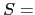 statement ';' statements |
| statement
ID '=' expression |
| expression
term '+' expression |
| term
factor '*' term |
| factor
'(' expression ')' |
La secuencia de llamadas cuando se procesa la entrada mediante el siguiente programa construye ``implícitamente'' el árbol de análisis sintáctico concreto.
Dado que estamos usando strict se requiere prototipar las funciones
al comienzo del fichero:
sub parse(); sub statements(); sub statement(); sub expression(); sub term(); sub factor(); sub idlist(); sub declaration(); sub declarations();
Para saber mas sobre prototipos consulte
![[*]](crossref.png) [3].
[3].
1 sub match {
2 my $t = shift;
3
4 if ($lookahead eq $t) {
5 ($lookahead, $value) = splice @tokens,0,2;
6 if (defined($lookahead)) {
7 $lookahead = $value if ($lookahead eq 'PUN');
8 } else { $lookahead = 'EOI'; }
9 }
10 else { error("Se esperaba $t y se encontro $lookahead\n"); }
11 }
12
13 sub statement {
14 if ($lookahead eq 'ID') { match('ID'); match('='); expression; }
15 elsif ($lookahead eq 'P') { match('P'); expression; }
16 else { error('Se esperaba un identificador'); }
17 }
18
19 sub term() {
20 factor;
21 if ($lookahead eq '*') { match('*'); term; }
22 }
23
24 sub expression() {
25 term;
26 if ($lookahead eq '+') { match('+'); expression; }
27 }
28
29 sub factor() {
30 if ($lookahead eq 'NUM') { match('NUM'); }
31 elsif ($lookahead eq 'ID') { match('ID'); }
32 elsif ($lookahead eq '(') { match('('); expression; match(')'); }
33 else { error("Se esperaba (, NUM o ID"); }
34 }
35
36 sub statements {
37 statement;
38 if ($lookahead eq ';') { match(';'); statements; }
39 }
40
41 sub parser {
42 ($lookahead, $value) = splice @tokens,0,2;
43 statements; match('EOI');
44 }
Como vemos en el ejemplo, el análisis predictivo confía en que, si estamos
ejecutando la entrada del procedimiento A,
el cuál está asociado con la variable  , el símbolo terminal
que esta en la entrada
, el símbolo terminal
que esta en la entrada  determine de manera unívoca la regla
de producción
determine de manera unívoca la regla
de producción
 que debe ser procesada.
que debe ser procesada.
Si se piensa, esta condición requiere que todas las partes derechas  de
las reglas
de
las reglas
 de
de  ``comiencen'' por diferentes símbolos.
Para formalizar esta idea, introduciremos el concepto de
conjunto
``comiencen'' por diferentes símbolos.
Para formalizar esta idea, introduciremos el concepto de
conjunto
 :
:
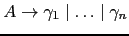
donde:
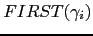
Podemos reformular ahora nuestra afirmación anterior en estos términos:
Si
 y los conjuntos
y los conjuntos
 son
disjuntos podemos construir el procedimiento para la variable
son
disjuntos podemos construir el procedimiento para la variable  siguiendo
este seudocódigo:
siguiendo
este seudocódigo:
sub A {
if ($lookahead in FIRST(gamma_1)) { imitar gamma_1 }
elsif ($lookahead in FIRST(gamma_2)) { imitar gamma_2 }
...
else ($lookahead in FIRST(gamma_n)) { imitar gamma_n }
}
Donde si  es
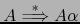 el código
es
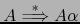 el código gamma_j consiste
en una secuencia
 de llamadas de uno de estos dos tipos:
de llamadas de uno de estos dos tipos:
X_i si match(X_i) si
| statements
statement ';' statements |
| expression
term '+' expression |
| term
factor '*' term |
¿Son disjuntos los conjuntos
 para las partes derechas de las reglas
de statements?
¿Son disjuntos los conjuntos
para las partes derechas de las reglas
de statements?
¿Son disjuntos los conjuntos
 para las partes derechas de las reglas
de expression?
¿Son disjuntos los conjuntos
para las partes derechas de las reglas
de expression?
¿Son disjuntos los conjuntos
 para las partes derechas de las reglas
de term?
para las partes derechas de las reglas
de term?
Si se tiene una variable con producciones:
| 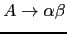 |
Las dos producciones tienen un máximo factor común en la izquierda
de su parte derecha  . Asumimos que
. Asumimos que
 .
.
Nótese que si
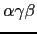 y
 es porque existe una derivación
es porque existe una derivación
 . ¿Que terminales podemos
legalmente encontrarnos cuando estamos en la subrutina
. ¿Que terminales podemos
legalmente encontrarnos cuando estamos en la subrutina A?
Consideremos una derivación desde el símbolo de arranque en la que se
use la producción
. Dicha derivación forzosamente
tendrá la forma:
Cualquier terminal
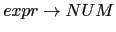 que pueda aparecer en una derivación desde
el símbolo de arranque inmediatamente a continuación de la variable  es susceptible de ser visto
cuando se esta analizando
es susceptible de ser visto
cuando se esta analizando  y se aplicó
con
y se aplicó
con
 .
Esto nos lleva a la definición del conjunto 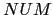 como conjunto
de terminales que pueden aparecer a continuación de
.
Esto nos lleva a la definición del conjunto 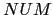 como conjunto
de terminales que pueden aparecer a continuación de  en una derivación
desde el símbolo de arranque:
en una derivación
desde el símbolo de arranque:

donde

EOI).
Si
 dado que los conjuntos
dado que los conjuntos
 han de ser disjuntos para que un analizador predictivo APDR funcione, sólo una parte derecha
puede contener la palabra vacía en su
han de ser disjuntos para que un analizador predictivo APDR funcione, sólo una parte derecha
puede contener la palabra vacía en su  . Supongamos que es
. Supongamos que es  .
Podemos reformular la construcción del procedimiento para la variable
.
Podemos reformular la construcción del procedimiento para la variable  siguiendo
este seudocódigo:
siguiendo
este seudocódigo:
sub A {
if ($lookahead in FIRST(gamma_1)) { imitar gamma_1 }
elsif ($lookahead in FIRST(gamma_2)) { imitar gamma_2 }
...
else ($lookahead in FIRST(gamma_n) or $lookahead in FOLLOW(A)) { imitar gamma_n }
}
Un caso particular de
 es que
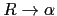. En tal caso, y como
es obvio, el significado de
es que
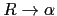. En tal caso, y como
es obvio, el significado de imitar gamma_n
es equivalente a ejecutar una sentencia vacía.
Repita el siguiente conjunto de reglas hasta que no se puedan añadir mas símbolos terminales o a ningún conjunto  :
:
| 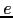 | |||
| 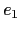 | |||
| 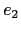 | |||
Este algoritmo puede ser extendido para calcular
 para
para
 .
El esquema es anólogo al de un símbolo individual.
.
El esquema es anólogo al de un símbolo individual.
Repita siguiente conjunto de reglas hasta que no se puedan añadir mas
símbolos terminales o a ningún conjunto
 :
:
| 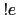 | |||
| 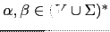 |
Repetir los siguientes pasos hasta que ninguno de los conjuntos  cambie:
cambie:
| statements
statement ';' statements |
| statement
ID '=' expression |
| expression
term '+' expression |
| term
factor '*' term |
| factor
'(' expression ')' |
Calcule los conjuntos  . ¿Es la nueva gramática susceptible
de ser analizada por un analizador predictivo descendente recursivo?
¿Cómo sería el código para la subrutina
. ¿Es la nueva gramática susceptible
de ser analizada por un analizador predictivo descendente recursivo?
¿Cómo sería el código para la subrutina statements?. Escríbalo.
Grammar::Parse la cual recibe una cadena conteniendo la
gramática en formato yacc o eyapp y devuelve una referencia a un
hash conteniendo la información pertinente para el tratamiento de
la gramática.
Para instalar el módulo tenga en cuenta que depende del módulo Parse::Yapp.
Para ilustrar el uso vea los ejemplos en el directorio scripts.
En concreto veamos el programa grammar.pl.
Grammar/scripts$ cat -n grammar.pl
1 #!/usr/bin/perl -w -I../lib
2 use strict;
3 use Grammar;
4 use Data::Dumper;
5
6 sub usage {
7 print <<"EOI";
8 usage:
9 $0 input_grammar
10 EOI
11 die "\n";
12 }
13
14 usage() unless @ARGV;
15 my $filename = shift;
16
17 local $/ = undef;
18 open my $FILE, "$filename";
19 my $grammar = <$FILE>;
20 my $x = Grammar::Parse($grammar);
21
22 print Dumper($x);
Vamos a darle como entrada la gramática en el fichero aSb.yp
conteniendo una gramática:
Grammar/scripts$ cat -n aSb.yp 1 %% 2 S: 3 | 'a' S 'b' 4 ; 5 %%
Las gramáticas aceptadas por Grammar::Parse se adaptan a la sintáxis de
las gramáticas reconocidas por Parse::Yapp.
Una gramática (normalmente con tipo .yp) consta de tres partes: la cabeza, el cuerpo
y la cola. Cada una de las partes va separada de las otras por el
símbolo %% en una línea aparte. Así, el %% de la línea 1
separa la cabeza del cuerpo. En la cabecera se colocan
las declaraciones de terminales (directiva %token),
cual es el símbolo de arranque (directiva %start), etc.
El cuerpo contiene las reglas de la gramática y
las acciones asociadas. Por último, la cola en nuestro caso no es
usada y es vacía. En general, la cola
contiene las rutinas de soporte al código que aparece en las acciones
asi como, posiblemente, rutinas para el análisis léxico
y el tratamiento de errores.
La salida de Grammar::Parse es una referencia a un hash cuyas entradas
vienen explicadas por los comentarios.
Grammar/scripts$ grammar.pl aSb.yp
$VAR1 = {
'SYMS' => { 'S' => 2, '"b"' => 3, '"a"' => 3 }, # Símbolo => línea
'NULL' => { 'S' => 1 }, # símbolos que se anulan
'RULES' => [
[ 'S', [] ], # S produce vacío
[ 'S', [ '"a"', 'S', '"b"' ] ] # S -> aSb
],
'START' => 'S', # Símbolo de arranque
'TERM' => [ '"b"', '"a"' ], # terminales /tokens
'NTERM' => { 'S' => [ 0, 1 ] } # índices de las reglas de las variables sintácticas
};
Usando la estructura devuelta por la función Grammar::Parse escriba un módulo
que provea funciones para computar los FIRST y los FOLLOW de las variables
sintácticas de la gramática. No olvide escribir la documentación.
Incluya una prueba por cada una de las gramáticas que figuran en el directorio scripts
del módulo Grammar.
Puede encontrar la práctica casi hecha en PL::FirstFollow. Asegúrese de entender el algoritmo usado. Aumente el número de pruebas y haga un análisis de cubrimiento.
¿De donde viene el nombre LL(1)? La primera L hace alusión al hecho de que el flujo de terminales se lee de izquierda a derecha, accediendo a la entrada por su izquierda (Left). La segunda L se refiere a que el método de análisis predictivo construye una derivación a izquierdas. El número entre paréntesis indica el número de terminales que debemos consultar para decidir que regla de producción se aplica. Asi, en una gramática LL(2) la decisión final de que producción elegir se hace consultando los dos terminales a la entrada.
Siguiendo con la construcción del compilador para el lenguaje Tutu, escriba un
analizador APDR para la siguiente gramática. Reutilice el código de las
prácticas de las secciones anteriores
(
y
).
| program
declarations statements |
| declarations
declaration ';' declarations |
| declaration
INT idlist |
| statements
statement ';' statements |
| statement
ID '=' expression |
| expression
term '+' expression |
| term
factor '*' term |
| factor
'(' expression ')' |
| idlist
ID ',' idlist |
GAP.pm que provea una subrutina gap para
la generación automática de un APDR supuesto que la gramática de entrada es
LL(1).
La subrutina gap recibe como entrada la gramática según la estructura de
datos generada por la función Grammar::Parse de la versión 0.3 del módulo
Grammar.
La estructura de datos generada por la función Grammar::Parse
se explicó en la práctica
3.2.8.
La estructura ha sido extendida
en esta versión para incluir el código que se sitúe en la zona de cola.
Por ejemplo, dada la gramática de entrada:
Grammar/03/scripts$ cat -n aSb.yp
1 %%
2 S:
3 | 'a' S 'b'
4 ;
5 %%
6
7 sub Lex {
8 local $_ = shift; # input
9 my @tokens;
10
11
12 while ($_) {
13 s/^\s*//; # fuera blancos
14 push @tokens, $1, $1 if s/^(.)//s
15 }
16 @tokens;
17 }
18
19 sub main {
20 my $filename = shift;
21 my $input;
22
23 if (defined($filename)) {
24 local $/ = undef;
25 open my $FILE, $filename or die "No se pudo abrir $filename\n";
26 $input = <$FILE>;
27 close($FILE);
28 }
29 else { $input = <STDIN> }
30
31 my @tokens = Lex($input);
32 Parse(@tokens); # Llamada al analizador generado
33 print "Sintácticamente correcto\n";
34 }
se genera la siguiente estructura de datos:
{
'SYMS' => { 'S' => 2, 'b' => 3, 'a' => 3 }, # Símbolo => línea de aparición
'NULL' => { 'S' => 1 }, # Símbolos que se anulan
'RULES' => [ # Reglas
[ 'S', [] ], # S produce vacío
[ 'S', [ 'a', 'S', 'b' ] ] # S-> a S b
],
'START' => 'S', # Símbolo de arranque
'TERM' => [ 'b', 'a' ], # Terminales
'NTERM' => { 'S' => [ 0, 1 ] } # Variables sintácticas e índices de las reglas de esa variable
'TAIL' => [ # [ 'Código de cola', línea en la que está el segundo %% ]
'
sub Lex {
local $_ = shift; # input
my @tokens;
while ($_) {
s/^\\s*//; # fuera blancos
push @tokens, $1, $1 if s/^(.)//s
}
@tokens;
}
sub main {
my $filename = shift;
my $input;
if (defined($filename)) {
local $/ = undef;
open my $FILE, $filename or die "No se pudo abrir $filename\\n";
$input = <$FILE>;
close($FILE);
}
else { $input = <STDIN> }
my @tokens = Lex($input);
my $ok = Parse(@tokens); # Llamada al analizador generado
print "Sintácticamente correcto\\n" if $ok;
}
', 5 ], # línea en la que está el segundo %%
};
Asi pues la entrada con clave TAIL contiene el código auxiliar de
cola. Este código debe ser incluido por su programa dentro del texto del
paquete generado por gap.
La función gap también recibe como entrada el nombre
del package:
$package_text = &gap($grammar, 'Package_name');La función
gap retorna
una cadena conteniendo el package en el que estan las subrutinas del
analizador sintáctico.
La idea es que dicha cadena se salvará en un fichero
con nombre Package_name.pm que podrá posteriormente ser usado
(use Package_name) por un programa que necesite analizar entradas
que se conforman de acuerdo a la especificación de la gramática.
parser (esto es, su nombre completo es: Package_name::parser.
Evidentemente Package_name debe ser un nombre Perl válido).
Ninguna subrutina deberá ser exportada sino que deberán ser llamadas
por su nombre completo.
La subrutina parser recibe como argumento el array de
terminales, obtiene el primer terminal y llama a la subrutina
asociada con el símbolo de arranque. Los terminales están representados
como parejas
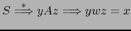.
Observe que, una vez que la cadena $package_text conteniendo el paquete ha sido
generada y salvada en un fichero con nombre Package_name.pm, podemos escribir
un programa cliente:
use strict; use Package_name; &Package_name::main;
Este programa espera una entrada desde fichero o STDIN e
informa si dicha entrada es sintácticamente correcta o no
para la gramática en cuestión.
Para facilitar la escritura de GAP.pm pueden hacer uso
del módulo PL::FirstFollow
el cual calcula los  y los
y los  . El módulo PL::FirstFollow
depende de
Set::Scalar
escrito por
Jarkko Hietaniemi: instálelo primero.
. El módulo PL::FirstFollow
depende de
Set::Scalar
escrito por
Jarkko Hietaniemi: instálelo primero.
Deberá familiarizarse con PL::FirstFollow, rellenar la
documentación de todas las subrutinas (apariciones de ???? en el texto)
y escribir la documentación siguiendo el template que se provee.
Rellene los fragmentos de código que se han sustituido por
signos de interrogación.
Haga un estudio de cubrimiento
y añada pruebas para mejorar el actual. El actual cubrimiento es:
---------------------------- ------ ------ ------ ------ ------ ------ ------ File stmt bran cond sub pod time total ---------------------------- ------ ------ ------ ------ ------ ------ ------ ...ammar-0.03/lib/Grammar.pm 100.0 n/a n/a 100.0 0.0 75.3 97.2 blib/lib/PL/FirstFollow.pm 100.0 92.9 50.0 100.0 0.0 24.7 95.1 Total 100.0 92.9 50.0 100.0 0.0 100.0 95.5 ---------------------------- ------ ------ ------ ------ ------ ------ ------Si observa un fallo en PL::FirstFollow háganoslo saber y además de resolverlo escriba una prueba para detectar el fallo.
Haga un estudio de profiling de su aplicación.
Un módulo que puede facilitar la escritura de esta práctica es Text::Template debido a Mark Jason Dominus. El siguiente ejemplo de uso es un fragmento de un traductor - que nunca acabo de terminar - que toma con fuente un fichero en el formato que usa Moodle para los cuestionarios (conocido como formato GIFT) y lo convierte en un cuestionario LATEX:
lhp@nereida:~/projects/Gift2LaTeX/Gift2LaTeX/lib$ cat -n Gift2LaTeX.pm
1 package Gift2LaTeX;
2
3 use strict;
4 use warnings;
5 use Gift;
6 use Text::Template;
7 use HTML::Latex;
.. ......................................................
49 package Gift::TRUEFALSE; # True-false questions belong to this class
50
51 { # closure
52
53 die "Can't find $TEMPLATE_DIR/TRUEFALSE_question.tep\n"
54 unless -e "$TEMPLATE_DIR/TRUEFALSE_question.tep";
55 my $tfq_tmpl = Text::Template->new( #tfq = true-false question
56 DELIMITERS => ['%<', '%>'];
57 SOURCE => "$TEMPLATE_DIR/TRUEFALSE_question.tep",
58 );
.. ......................................................
67 sub gen_latex {
68 my $self = shift;
69
70 ########## Generate latex for question
71 my $prefix = $self->PREFIX;
72
73 my $sufix = $self->POSTSTATE;
74
75 $self->Error("Only HTML and PLAIN formats are supported\n")
76 unless (!$self->FORMAT or ($self->FORMAT =~ m{html|plain}i));
77
78 my ($prefix_tex, $sufix_tex);
79 if (defined($self->FORMAT) and $self->FORMAT =~ m{plain}i) {
80 $prefix_tex = $prefix;
81 $sufix_tex = $sufix;
82 }
83 else { # HTML by default
.. ......................................................
86 }
87 my $params = {
88 prefix => $prefix_tex,
89 sufix => $sufix_tex,
90 separator => $separator,
91 label => $label_prefix.$question_number,
92 question_number => $question_number
93 };
94 my $question_tex = $tfq_tmpl->fill_in(HASH => $params);
96 ########## Generate latex for answer
... ....................................
101 }
102 }
En la línea 55 se crea el template. El template se lee desde el fichero
"$TEMPLATE_DIR/TRUEFALSE_question.tep" cuyo contenido es una mezcla
de texto (en este caso texto LATEX y HTML) con código Perl:
El código Perl aparece acotado entre los delimitadores '%<'
y '%>'.
lhp@nereida:~/projects/Gift2LaTeX/Gift2LaTeX/etc/en$ cat -n TRUEFALSE_question.tep
1 \ begin{latexonly}
2 %<$separator%>
3 \ label{question:%<$label%>}
4 %<$prefix%>
5
6 \ begin{center}
7 \ begin{tabular}{llll}
8 $\ bigcirc$ & TRUE & $\ bigcirc$ & FALSE
9 \ end{tabular}
10
11 \noindent %<$sufix%>
12 \ end{center}
13 \ end{latexonly}
14
15 \ begin{htmlonly}
16 %<$separator%>
17 \ label{question:%<$label%>}
18 %<$prefix%>
19
20 \ begin{center}
21 \ begin{tabular}{llll}
22 \ htmlref{$\bigcirc$}{answer:%<$label%>} & TRUE &
23 \ htmlref{$\bigcirc$}{answer:%<$label%>} & FALSE
24 \ end{tabular}
25
26 \ noindent %<$sufix%>
27 \ end{center}
28 \ end{htmlonly}
El template se rellena en las líneas 87-94. En esa llamada se ejecuta el código Perl incrustado en el esqueleto y su resultado se inserta en la posición que ocupa en el texto.
my $usage = "Usage: $0 <file> [-full] [-o] [-beans]\n"
. "Options:\n"
. " -full : produce a full dump\n"
. " -o : dump in octal\n"
. " -beans : source is Java\n"
;
ponga el punto al principio de la siguiente línea, no al final.
Pero cuando el número de líneas es grande es mejor usar un here document o documento aqui. Veamos un ejemplo:
print <<"EOI"; El programa se deberá ejecutar con: $0 numfiles $opciones initialvalue EOIPara definir un ``documento aqui'' se escribe la etiqueta entrecomillada y precedida de
<< y
sigue el texto que consituye el here document
que se delimita por una línea en blanco que empieza por la etiqueta.
Al documento aquí se le trata como una cadena de doble comilla si
la etiqueta aparece en doble comilla y como de comilla simple
si la etiqueta esta entre comillas simples.
Observe que el punto y coma se escribe despues
de la primera aparición
de la etiqueta.
Un problema con el uso de los heredoc es que rompen la estructura normal del sangrado:
if ($usage_error) {
warn <<'END_USAGE';
Usage: qdump <file> [-full] [-o] [-beans]
Options:
-full : produce a full dump
-o : dump in octal
-beans : source is Java
END_USAGE
}
Es mejor que cada heredoc se aisle en una subrutina y se parametrice con
las variables que van a ser interpoladas:
sub build_usage {
my ($prog_name, $file_name) = @_;
return <<"END_USAGE";
Usage: $prog_name $file_name [-full] [-o] [-beans]
Options:
-full : produce a full dump
-o : dump in octal
-beans : source is Java
END_USAGE
}
que mas tarde puede ser llamado con los valores de interpolación adecuados:
if ($usage_error) {
warn build_usage($PROGRAM_NAME, $requested_file);
}
Véase el libro de Conway Perl Best Practices
[]
para mas detalles sobre buenas prácticas de programación con heredocs.